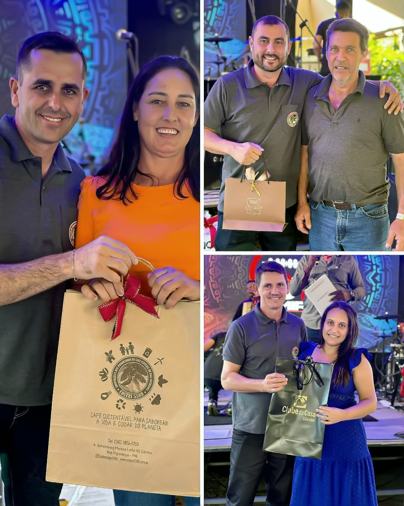

<section class="container-card" aria-label="Lista de eventos e apresentações">
    <!--Card-->
    <article class="card" aria-labelledby="titulo-evento-coopcostas">
        <div class="galeria-wrapper" role="region" aria-label="Galeria do evento - Cooperativa dos Costas">
            <!-- Botão para navegar para o slide anterior -->
            <button class="seta externa esquerda anterior" type="button" aria-label="Slide anterior">
                <i class="fa-solid fa-circle-chevron-left" aria-hidden="true"></i>
            </button>
            <!--Carrossel de vídeo e imagens-->
            <div class="carrossel" tabindex="0" aria-roledescription="Carrossel de mídia"
                aria-label="Imagens e vídeo do evento">
                
                
                
                <div class="video-wrapper" role="group" aria-label="Vídeo da confraternização - Cooperativa dos Costas">
                    <video src="../videos/coopcostas-2025.mp4" muted autoplay loop playsinline
                        controlslist="nodownload nofullscreen noremoteplay"
                        aria-label="Vídeo do evento com apresentação musical da dupla Simão Breno & Júnior">
                        Seu navegador não suporta vídeos HTML5.
                    </video>
                    <!--Botão Player-->
                    <div class="play-overlay" aria-hidden="true">
                        <i class="fas fa-play-circle"></i>
                    </div>
                    <!--Controles do vídeo-->
                    <div class="video-controles">
                        <button class="botao-controle mute" title="Ativar ou desativar som"
                            aria-label="Ativar ou desativar som">
                            <i class="fas fa-volume-mute" aria-hidden="true"></i>
                        </button>
                        <button class="botao-controle fullscreen" title="Entrar ou sair do modo tela cheia"
                            aria-label="Tela cheia">
                            <i class="fas fa-expand" aria-hidden="true"></i>
                        </button>
                    </div>
                </div>
                
                
                
                
                
            </div>
            <!-- Botão para navegar para o próximo slide -->
            <button class="seta externa direita proximo" type="button" aria-label="Próximo slide">
                <i class="fa-solid fa-circle-chevron-right" aria-hidden="true"></i>
            </button>
            <!-- Indicadores de navegação entre slides -->
            <div class="indicadores" role="group" aria-label="Indicadores de slides"></div>
        </div>
        <!-- Legenda descritiva do evento -->
        <div class="legenda-fixa ordem">
            <h3 id="titulo-evento-coopcostas">11ª Confraternização - Cooperativa dos Costas</h3>
            <p>
                No sábado, 24 de maio, aconteceu a <strong>11ª Confraternização</strong> da
                <a class="link" href="https://www.instagram.com/p/DKKvY7yu4Jf/" target="_blank"
                    rel="noopener noreferrer">
                    Cooperativa dos Costas
                </a>, em Boa Esperança/MG. O evento contou com sorteios de brindes, atividades para as crianças e
                apresentações musicais, incluindo a participação da dupla Simão Breno & Júnior. Foi um momento de
                confraternização e integração entre as famílias cooperadas.
            </p>
        </div>
    </article>
</section>